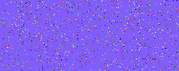
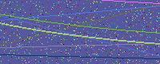
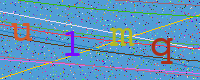
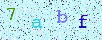

楔子
本次来分享一个关于验证码的知识，在登录网站时，为了确保是人在操作，一般会要求输入图片上的验证码。那么这个验证码要怎么生成呢？以及在做爬虫的时候，怎么用机器来识别呢？
围绕着这两个问题，我们开始今天的内容。
生成验证码
所谓验证码就是一张图片，图片上有一些数字和字母。所以我们只要生成一张图片，然后在图片上写一些内容即可。
使用 PIL 模块可以非常方便做到这一点，没有安装的话，需要执行 pip install pillow。
from random import randint, sample
import string
from PIL import Image, ImageFont, ImageDraw
# 随机生成画板颜色
bg_color = randint(0, 255), randint(0, 255), randint(0, 255)
# 定义画板的宽和高
width, height = 200, 80
# 创建画板对象
im = Image.new("RGB", (width, height), bg_color)
# 创建画笔对象，接收画板对象
# 这样一来，画笔所画的内容都会显示在画板上
draw = ImageDraw.Draw(im)
# 绘制噪点，噪点的数量一般为 width * height * 0.1
for _ in range(int(width * height * 0.1)):
# 噪点的横纵坐标
point_pos = randint(0, width), randint(0, height)
# 噪点的颜色，尽量也是随机的
point_color = randint(0, 255), randint(0, 255), randint(0, 255)
# 绘制
draw.point(point_pos, point_color)
# 查看绘制的图片
im.show()
执行代码，会生成图片，我们看一下长什么样子。

可以看到噪点此刻绘制出来了，再为其绘制几条直线和曲线。
# 直线的长度要从画板的左边到画板的右边
# 因此左端点要在画板左侧上下变化，右端点要在画板右侧上下变化
for _ in range(5):
left_pos = 0, randint(0, height)
right_pos = width, randint(0, height)
line_color = randint(0, 255), randint(0, 255), randint(0, 255)
# 绘制直线
draw.line([left_pos, right_pos], line_color)
# 绘制曲线，这里绘制的是一个超出画板的大圆
# 这样在画板上显示的部分只是大圆的一条弧，看起来就像是一条曲线
for _ in range(5):
left_pos = (-100, -100)
right_pos = (width * 5, randint(0, height))
arc_color = randint(0, 255), randint(0, 255), randint(0, 255)
draw.arc([left_pos, right_pos], 0, 360, arc_color)
# 查看一下，绘制的图形长什么样子
im.show()
直线和曲线也绘制好了，看下效果。

效果还是不错的，最后我们来绘制文字。
# 验证码是由文字和数字组成，先来获取所有的数字和字母
alpha_digit = string.ascii_letters + string.digits
# 验证码一般是四个字符，从里面随机选取4个
verify_code = sample(alpha_digit, 4)
# 生成字体对象
font = ImageFont.truetype("/System/Library/Fonts/Courier.ttc", 40)
# 为四个字符创建四种颜色
text_color = [(randint(0, 255), randint(0, 255), randint(0, 255))
for _ in range(4)]
# 绘制文字
# 注意：坐标加上字体的宽度不要超出画板，否则显示不全
draw.text((10, 10), verify_code[0], fill=text_color[0], font=font)
draw.text((60, 25), verify_code[1], fill=text_color[1], font=font)
draw.text((110, 15), verify_code[2], fill=text_color[2], font=font)
draw.text((150, 25), verify_code[3], fill=text_color[3], font=font)
# 绘制完成，最后再查看一下
im.show()
到此我们的验证码就生成完毕了，那么效果如何呢？我们查看一下。

整体来看还凑合，你也可以对背景色，以及文字的颜色进行调整。如果觉得背景里的噪点、线段不太好，也可以将它们去掉。
最后再来说说保存，代码中的 im.show() 实际上是打开了一个临时文件，我们如何将它保存下来呢？
# 可以输入一个路径，然后保存成指定的文件
# 不过更常见的做法是拿到图片的字节流，然后直接对字节流进行渲染
from io import BytesIO
buf = BytesIO()
im.save(buf, "png")
# 此时图片内容就保存在了 buf 中
print(buf.getvalue()[: 6] == b"\x89PNG\r\n") # True
以上就是绘制验证码的过程，代码是分块展示的，你可以将它们合在一起，测试一下。
识别验证码
说完了生成验证码，那么如何识别验证码呢？Python 有一个第三方库 ddddocr，可以帮我们识别，直接 pip install ddddocr 安装即可。
我们目前已经生成了一张验证码：

这里补充一句，我们上面生成的验证码图片，在颜色上设计的不太好，因为背景色和文字颜色都是随机的，这就导致当颜色相近时，看不清文字内容。
而当文字颜色和背景色比较接近时，ddddocr 识别的准确率就会降低很多，特别是背景中还有噪点和线段作为干扰。不过一般来说网站的验证码图片都是经过设计的，背景色和文字颜色区别还是比较大的，所以不用担心。
我们测试一下：
import ddddocr
with open("code.png", "rb") as f:
data = f.read()
# show_ad 默认为 True，执行时会输出一些广告，我们不让它输出
ocr = ddddocr.DdddOcr(show_ad=False)
code = ocr.classification(data)
print(code) # 7abf
结果没有问题，识别出来了。
以上就是关于图片验证码的一些内容。